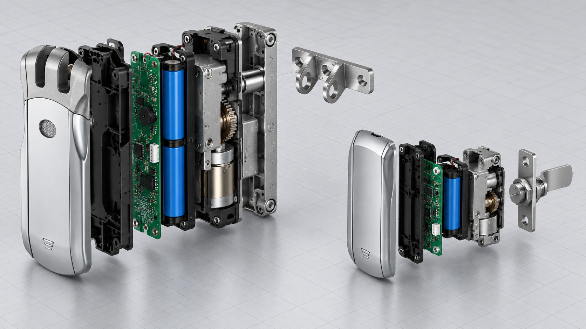
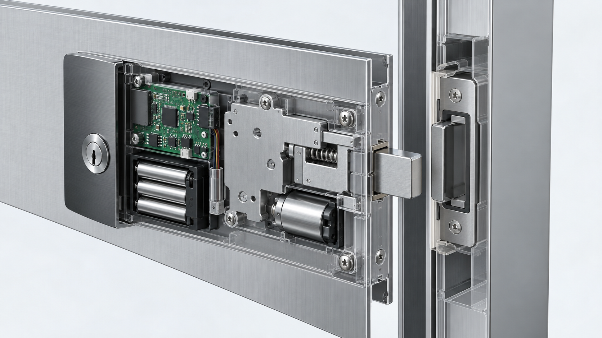

Este é um estudo de viabilidade, não um lançamento. WF-010 e WF-019 não são atualmente apresentadas como fechaduras padrão para armários. Desenhos, amostras e especificações aprovadas são obrigatórios.
WF-010 e WF-019 combinam instalação oculta, bateria, controlo por rádio e acionamento motorizado. São um ponto de partida útil, mas uma porta de armário altera o espaço, a geometria do trinco, a manutenção e o ambiente RF. É necessário separar módulos reutilizáveis de peças a redesenhar.
1. Separar plataforma e produto final
Uma porta com aro difere de chapa fina, parede dupla e espaço interno reduzido. WF-010 e WF-019 são bases de desenvolvimento, não fechaduras de armário aprovadas.
2. Verificar espaço e caminho de carga
Espessura, dobras, dobradiças, batente, contra-fecho e manutenção definem o projeto. Came e trinco curto exigem cursos e tolerâncias próprios.

3. Identificar módulos reutilizáveis
Lógica RF, controlo do motor, bateria e ensaios de produção podem ser reutilizados como conhecimento. PCB, antena, conectores e alimentação devem ser revistos.
4. Redesenhar a mecânica do armário
Came, trinco, placa, contra-fecho, anti-afrouxamento e acesso à bateria formam um novo sistema. A flexão da chapa não deve manter carga no motor.

5. Separar famílias de armários
Arquivo, cacifo, encomendas, quadro elétrico e armário industrial têm ciclos e riscos diferentes. A validação aplica-se apenas à família ensaiada.

6. Definir a aprovação da amostra
Desenho, instalação, RF com porta fechada, bateria baixa, bloqueio, emergência e ciclos devem ser registados. Alterações críticas exigem nova validação.
7. Conclusão
A plataforma é viável como base de desenvolvimento, não como substituição direta. Desenho, material, quantidade, acessos e mercado devem preceder ferramentas.
Projeto e OEM/ODM
Envie o desenho do armário, material, quantidade e requisitos de rádio para definir uma amostra verificável.